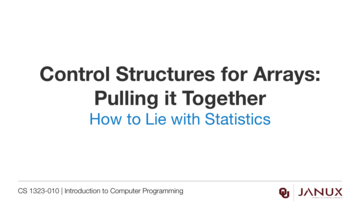

Review for Third Midterm
A examination that tests the topics covered in the third quarter of the course.
The solution to an examination that tests the topics covered in the third quarter of the course.
Several examples of examinations that test the topics covered in the third quarter of the course.
Several example documents of Midterm solutions.
